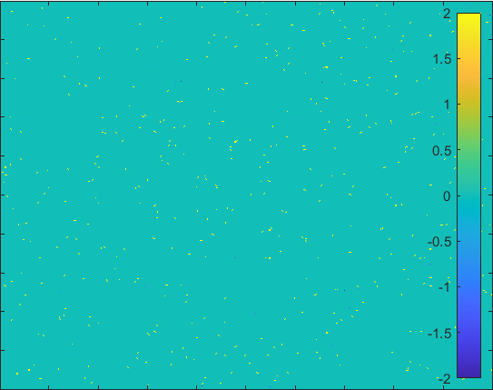
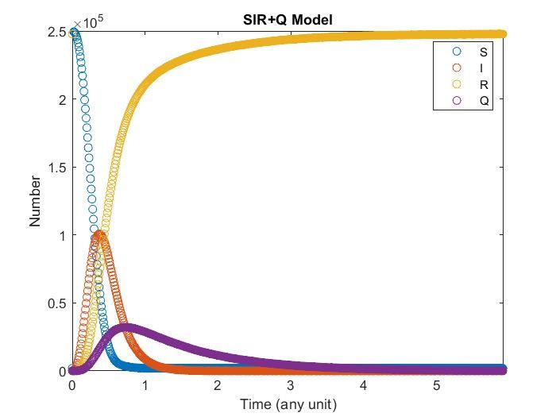
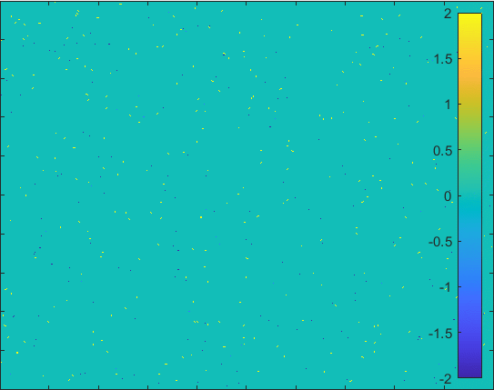
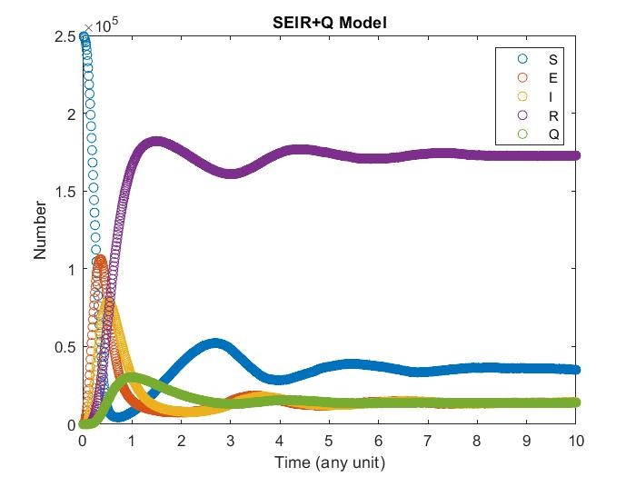
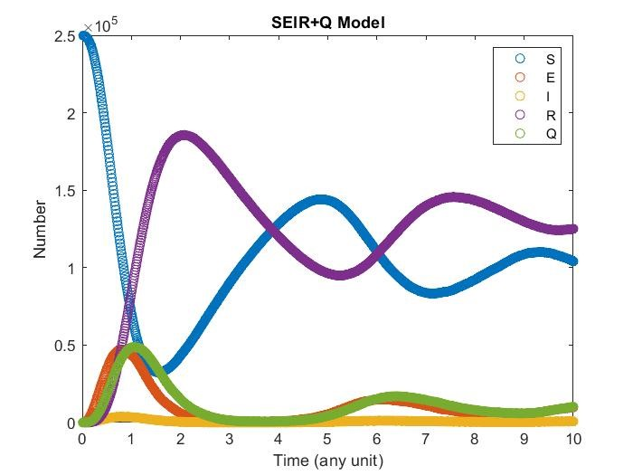
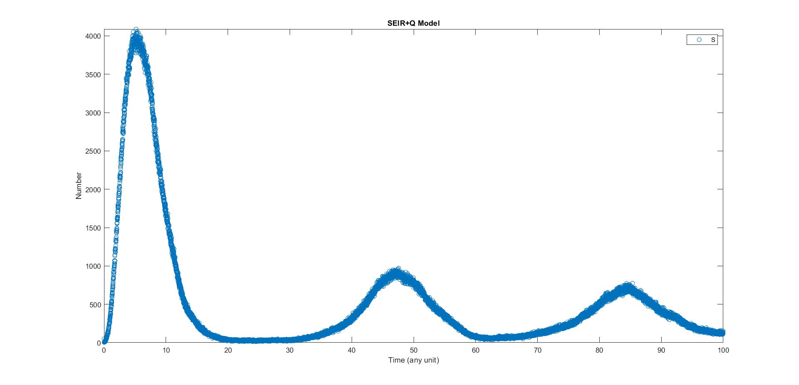
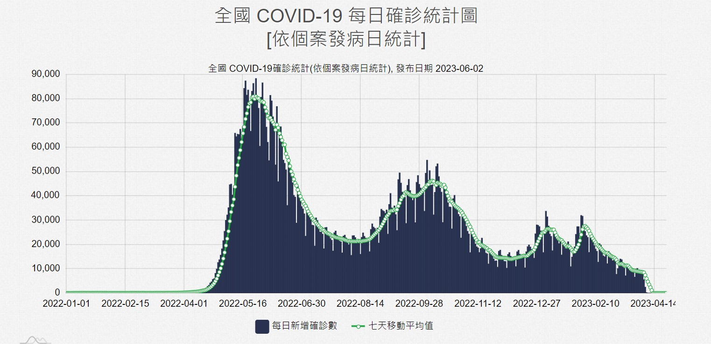

HYY Home
|
Hao-Yang Yen

Experience
|

Learning
|

Research
|

Expplore
|
SIR Model In Different Forms
I do this project with 賀子齊 in 2023 spring.
Abstract
A simple differential equation used to describe virus spread in space, S represent susceptibility, I represent infectious, and R represent recover, α and γ are infectious and recovery rate.
\(\displaystyle\frac{dS}{dt}=-\alpha S I\)
\(\displaystyle\frac{dI}{dt}=\alpha S I-\gamma I\)
\(\displaystyle\frac{dR}{dt}=\gamma I\)
We use the Monte Carlo method to simulate equation, it can well improve the simulate of multiple differential equation and show straightforward result.
Modeling
To model these equations in the probability form, we have the following assumptons
-
All parameter in the model do not change with time.
-
All individulas distribute in the space uniformly.
-
All individulas does not move.
-
All individulas has the same probability to be infected.
SIR+Q Model
-
The model having smaller probability to change form \(I\) to \(Q\).


-
The model having larger probability to change form \(I\) to \(Q\).

 SEIRS+Q Model
SEIRS+Q Model
-
The model having smaller probability to change form \(I\) to \(Q\).

-
The model having larger probability to change form \(I\) to \(Q\).

Conclusion
Here we plot everyday who got virus of our simulation with actual data in taiwan, unfortunately the they delete all data in the previous part of epidemic, but we can still see the plot looks similar. The most difference is that the some part of our simulation, they would be no people got virus, whereas in reality everyday people would get virus. In simulation everyone will get virus at first outbreak, whereas in reality aren’t. lso, there are too many factor in reality and may not be well to quantify.


